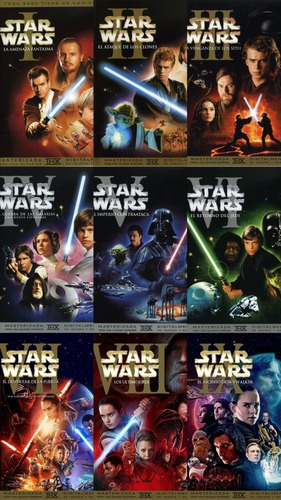

LAS PELICULAS SE DIVIERON EN 3 TRILOGIAS EMPEZANDO CON LOS EPISODIOS 4,5 Y 6 MAS ADELANTE SE ESTRENARON LAS 1,2 Y 3, POR ULTIMO CUANDO DISNEY COMPRO LUCAS FILM LANZO LA ULTIMA TRILOGIA CON LAS NUMERO 7,8 Y 9
- Episodio 1: La amenaza fantasma (1999)
- Episodio 2: El ataque de los clones (2002)
- Episodio 3: La venganza de los Sith (2005)
- Episodio 4: Una nueva esperanza (1977)
- Episodio 5: El imperio contraataca (1980)
- Episodio 6: El regreso del Jedi (1983)
- Episodio 7: El despertar de la Fuerza (2015)
- Episodio 8: Los últimos Jedi (2017)
- Episodio 9: El ascenso de Skywalker (2019)
Episodio 1: La amenaza fantasma (1999)
Dos Jedi descubren al joven Anakin Skywalker, un niño con gran poder, mientras intentan resolver un conflicto galáctico provocado por una federación comercial y el misterioso regreso de los Sith.
Episodio 2: El ataque de los clones (2002)
Diez años después, Anakin se convierte en aprendiz Jedi y se enamora de Padmé Amidala, mientras estalla una guerra civil y se revela una conspiración que afecta a toda la República.
Episodio 3: La venganza de los Sith (2005)
Anakin, seducido por el lado oscuro, se convierte en Darth Vader y ayuda al Canciller Palpatine a destruir la Orden Jedi y fundar el Imperio Galáctico.
Episodio 4: Una nueva esperanza (1977)
Luke Skywalker comienza su camino como Jedi, guiado por Obi-Wan Kenobi, y se une a la Rebelión para destruir la Estrella de la Muerte y enfrentarse al Imperio.
Episodio 5: El imperio contraataca (1980)
El Imperio contraataca brutalmente. Luke entrena con Yoda mientras descubre un oscuro secreto sobre Darth Vader. La Rebelión sufre grandes pérdidas.
Episodio 6: El regreso del Jedi (1983)
Luke enfrenta a Vader y al Emperador para salvar a su padre y vencer al Imperio. La batalla final en Endor trae esperanza y libertad a la galaxia.
Episodio 7: El despertar de la Fuerza (2015)
Una nueva heroína, Rey, emerge mientras la Resistencia lucha contra la Primera Orden. Han Solo regresa y un nuevo villano, Kylo Ren, aparece.
Episodio 8: Los últimos Jedi (2017)
Rey busca la ayuda de Luke Skywalker, quien vive exiliado. La Resistencia sufre pérdidas mientras se revelan más secretos del pasado de Kylo Ren.
11. Episodio 9: El ascenso de Skywalker (2019)
La Resistencia enfrenta al regreso del Emperador Palpatine. Rey descubre su verdadero linaje y libra la batalla final para restaurar la paz en la galaxia.